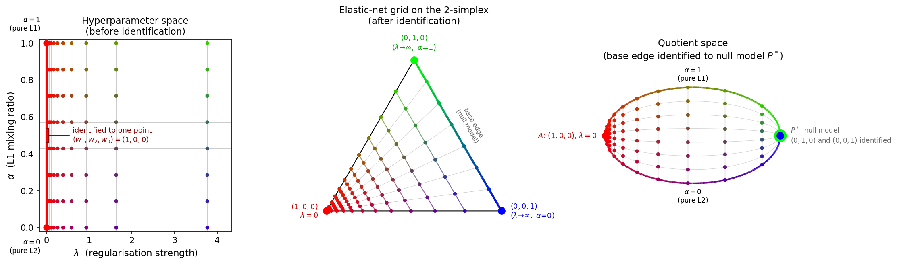
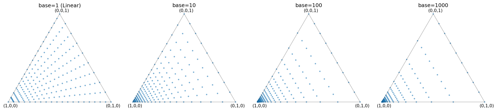

Elastic Net Grid Sampling
When fitting a Bézier simplex to the elastic-net regularization map you first need to
choose a set of weight vectors on the standard 2-simplex \(\Delta^2\) at which to
evaluate the model.
The elastic_net_grid() function
generates a purpose-built grid that respects the intrinsic geometry of the elastic-net
hyperparameter space.
The Hyperparameter Space
The elastic net is conventionally formulated with a regularization strength \(\lambda \ge 0\) and an L1/L2 mixing ratio \(\alpha \in [0, 1]\):
Here \(f_{\text{data}}\) is the data-fidelity term, \(f_{\text{sparse}}\) is the L1 penalty and \(f_{\text{smooth}}\) is the L2 penalty. This parameterization is a semi-infinite rectangle \([0,\infty) \times [0,1]\) in \((\lambda,\alpha)\).
Equivalently, elastic-net optimization can be written as a convex combination of the same three objectives:
The conventional elastic-net parameters \(\lambda \ge 0\) (overall regularization strength) and \(\alpha \in [0, 1]\) (L1 mixing ratio) relate to the simplex weight vector by:
The \((\lambda, \alpha)\) parameter space is a semi-infinite rectangle \([0,\infty) \times [0,1]\). When \(\lambda = 0\) the regularization terms vanish and the solution depends only on the data, regardless of \(\alpha\). Therefore the entire edge \(\{\lambda = 0\} \times [0, 1]\) maps to the single vertex \((w_1, w_2, w_3) = (1, 0, 0)\) of the simplex. Identifying this edge with a single point transforms the rectangle into a triangle – the 2-simplex \(\Delta^2\).
Conversely, as \(\lambda \to \infty\) the regularization overwhelms the data term
and drives all model coefficients to zero, regardless of \(\alpha\).
In the elastic net this limit is called the null model (all \(\beta_i = 0\)).
All weight vectors on the opposite edge of the simplex
\(\{(w_1, w_2, w_3) : w_1 = 0\}\) — the base edge connecting
\((0, 1, 0)\) and \((0, 0, 1)\) — therefore correspond to the same solution.
Since the Bézier simplex (and the underlying solution map) must assign a single output
to each input weight, all of these base-edge weights are identified with a single
null-model point \(P^*\) in the solution space. The
elastic_net_grid() function still
returns multiple distinct base-edge weights (\(w_1 = 0\) with varying \(w_2\),
\(w_3\)), but they all evaluate to this same null-model solution. The resulting
quotient space is a leaf/eye-shaped CW complex: two 0-cells (\(A\) and
\(P^*\)), two 1-cells (the former edges \(AB\) and \(AC\), now connecting
\(A\) to \(P^*\) as curves), and one 2-cell (the interior).
This identification gives the interior a leaf (foliation) structure: for each fixed value of \(w_1 \in (0, 1]\), the set of corresponding weight vectors \(\{(w_1, w_2, w_3) : w_2 + w_3 = 1 - w_1,\; w_2, w_3 \ge 0\}\) is a line segment (a leaf) parametrized by \(\alpha\). As \(w_1 \to 0\) (i.e. \(\lambda \to \infty\)), the images of these leaves under the solution map shrink to the single null-model point \(P^*\).
{kind=link}

Fig. 6 All points are colored by \((w_1, w_2, w_3) \mapsto (R, G, B)\), so the same weight vector has the same color in every panel. Left – The \((\lambda, \alpha)\) hyperparameter space (x: regularization strength, y: L1 mixing ratio). The red line at \(\lambda = 0\) is the identified edge; all points on it share the color \((1, 0, 0)\) = red because \(w = (1, 0, 0)\) there. Center – The 2-simplex with vertices \((1,0,0)\) at the bottom-left (red), \((0,1,0)\) at the top (green), and \((0,0,1)\) at the bottom-right (blue). The gradient right edge (green→blue) is the null-model base edge to be identified. Right – The quotient space rotated 90° counterclockwise: vertex \(A\) = \((1,0,0)\) (red) at the left, and the null-model point \(P^*\) at the right shown as a large green dot \((0,1,0)\) behind a smaller blue dot \((0,0,1)\), reflecting that both endpoints of the base edge are identified to \(P^*\).
Grid Structure
A uniform grid in \((\lambda, \alpha)\) is sub-optimal because solutions change
rapidly near \(\lambda = 0\) and slowly for large \(\lambda\).
elastic_net_grid() therefore uses:
Log-scale spacing in the data-fidelity weight coordinate \(w_1\) – the
reverse_logspace()routine generatesn_lambdas - 1values of \(w_1 \in [0, 1)\) that serve as \(w_1\)-levels for iso-\(w_1\) leaves, including \(w_1 = 0\) (which lies on the null-model base edge and corresponds to \(\lambda = \infty\)) and excluding the data-fidelity vertex at \(w_1 = 1\). The vertex at \(w_1 = 1\) (i.e. \(\lambda = 0\)) is appended separately. As \(w_1\) increases from 0 towards 1, these levels move from the base edge into the simplex interior towards the data-fidelity vertex. Since \(\lambda = (1 - w_1) / w_1\) is finite only for \(w_1 > 0\), all finite values of \(\lambda\) arise from \(0 < w_1 < 1\). The log spacing in \(w_1\) produces more \(w_1\) levels close to the data-fidelity vertex and therefore near \(\lambda = 0\). The steepness of this clustering is controlled by thebaseparameter:base=1gives uniform spacing in \(w_1\), while larger values concentrate points further towards \(w_1 = 1\) (i.e. towards smaller \(\lambda\)).Uniform spacing along \(\alpha\) – for each \(w_1\) level, the
n_alphasvalues of \(\alpha\) are placed uniformly in \([0, 1]\) to span the corresponding iso-\(w_1\) leaf.
The n_vertex_copies parameter adds extra copies of each simplex vertex.
This is useful when the grid is passed to k-fold cross-validation
(see Automatic Degree Selection): set n_vertex_copies >= k for k-fold CV so that,
when the fold-splitting procedure distributes rows approximately evenly, each fold
will contain every vertex at least once. Using fewer copies than folds can inflate
cross-validation variance.
{kind=link}

Fig. 7 Grid points on the 2-simplex for different values of the base parameter
(n_lambdas=20, n_alphas=10). Larger bases push more points towards the
data-fidelity vertex \((1, 0, 0)\) (bottom-left corner in the figure),
which is appropriate when you expect the optimal model to have small
\(\lambda\).
Usage
As a Python Function
import numpy as np
from torch_bsf.model_selection.elastic_net_grid import elastic_net_grid
# Generate a grid with 102 lambda levels, 12 alpha levels, and 10 vertex
# copies (useful for 10-fold cross-validation).
grid = elastic_net_grid(
n_lambdas=102,
n_alphas=12,
n_vertex_copies=10,
base=10,
)
# grid.shape == (1240, 3)
# Each row is a weight vector (w1, w2, w3) on the 2-simplex.
np.savetxt("weights.csv", grid, delimiter=",", fmt="%.17e")
The returned array can be saved to a CSV file and then either (a) loaded back into an
array or tensor and passed as the params argument to torch_bsf.fit(), or
(b) passed as a file path to the --params CLI option, to train a Bézier simplex
over the elastic-net regularization map.
As a Python Module (CLI)
Run the module directly to print the grid as a CSV file to stdout:
python -m torch_bsf.model_selection.elastic_net_grid \
--n_lambdas=102 \
--n_alphas=12 \
--n_vertex_copies=10 \
--base=10 \
> weights.csv
All four parameters are optional and fall back to their defaults
(n_lambdas=102, n_alphas=12, n_vertex_copies=1, base=10).
Via MLproject
The elastic_net_grid entry point in MLproject calls the same module and
redirects the output to a CSV file named
weight_{n_lambdas}_{n_alphas}_{n_vertex_copies}_{base}.csv:
mlflow run https://github.com/opthub-org/pytorch-bsf \
-e elastic_net_grid \
-P n_lambdas=102 \
-P n_alphas=12 \
-P n_vertex_copies=10 \
-P base=10
After the run completes, the grid is saved in the current working directory as
weight_102_12_10_10.csv. You can then pass it as the params argument to a
subsequent training run:
mlflow run https://github.com/opthub-org/pytorch-bsf \
-P params=weight_102_12_10_10.csv \
-P values=values.csv \
-P degree=6
See also
torch_bsf.model_selection.elastic_net_grid.elastic_net_grid()– API reference with parameter descriptions and examples.torch_bsf.model_selection.elastic_net_grid.reverse_logspace()– helper that generates log-spaced samples for the first weight component \(w_1\), from which the \(\lambda = (1 - w_1) / w_1\) values are derived.Automatic Degree Selection – automatic degree selection via k-fold cross-validation.
Elastic Net Model Selection – end-to-end example of elastic-net model selection using PyTorch-BSF.